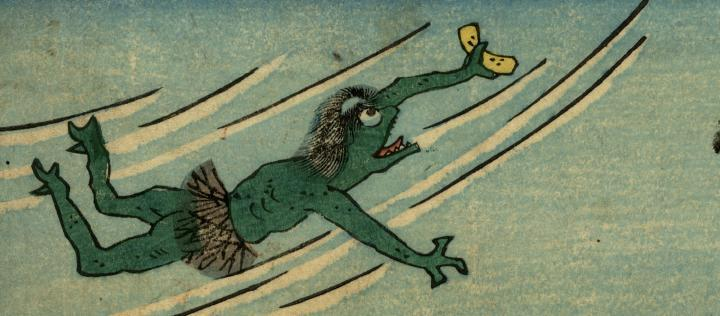

川の中を泳ぐ河童。肌は緑色で頭には皿がある。腰蓑をつけ、手に何かを持っている。
出典：親書誌：U426_nichibunken_0272：かつば化くらべ；カッパ バケクラベ／日付：2014／資源識別子：U426_nichibunken_0272_0001_0000
Copyright (c)2010- International Research Center for Japanese Studies, Kyoto, Japan. All rights reserved.